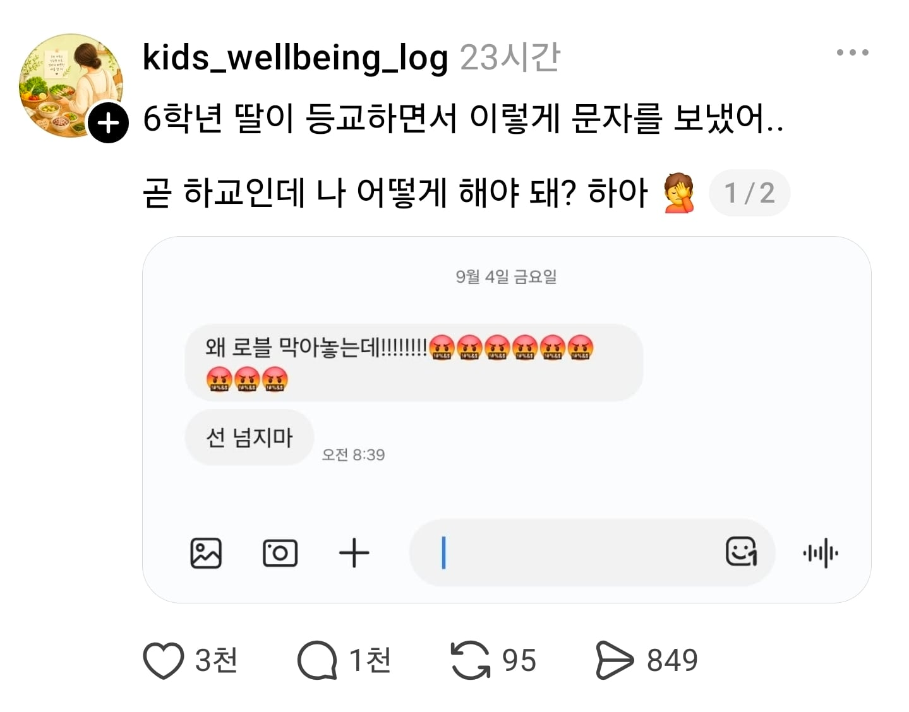

딸 교육테크트리 잘못 찍은듯 ㅋㅋㅋㅋㅋ???: 선 넘지마
댓글
식당에서 소리지르고 뛰어다니는것은
마약 도박 이런거 아닌데 통제 안해도됨?
무슨 통제 기준이 마약과도박이야?
이야 요즘 초딩들도 그딴식으로는 태클 안걸겠다 ㅋㅋㅋㅋㅋㅋㅋㅋㅋㅋㅋㅋ 수준이 진짜 ㅅㅂ ㅋㅋㅋㅋㅋㅋㅋㅋㅋㅋㅋ
지가 잘못작성한걸 남탓하는 수준 ㅋ
어릴때는 채팅되는 게임 시키면 안된다는 말이 맞는거 같다.
막은게 좋은일은 아니지만
저런 예의 밥말아 먹은 문자가 먼저 선을 아득히 넘어버렸지....
어떻게 교육해야할지 골치 아프겠네
이럴때 애가 왜 화났는지 알아보고 행동해야함 ㅅㅂ 그래서 로블록스가 뭐임?
게임임 ㅇㅇ 부모가 통제걸어둔듯
아직도 교육이랍시고 게임 통제하나보네
막는 건 그렇다쳐도 표현은 교정해줘야 할 듯
그러니까 막은 이유는 일단 들어보고 싶네
ㄹㅇ 뭐 숙제도 안하고 새벽 1시까지 로블만 한다 -> 이해됨
게임은 나쁜거래 -> 병임
직원: 갑자기 월급 왜 안주는데!!! 선넘지마
사장: 직원이 퇴근하면서이렇게 문자보냈어. 곧 출근인데 어떻게해야해?
월급 = 노동의 정당한 댓가 로블록스 = ? 예를 잘못든 것 같음
뭐 그렇긴 한데 딸의 감정이 이런 상태이지 않을까 싶어서
어릴때 생각해보면 겜 못 하게 하는건 진짜 화남..
숙제할 거 다 했는데 걍 겜하는거 꼴보기 싫어서 막아둔거면 맞는 예시인듯
그건 맞겠다. 개빡칠듯.
부모가 친구냐
꼭 그렇게 말해야하는 상황이었을까
더 심각한 선을 넘은 건 애구만
이건 아버지든 어머니든 양측에 다 공유하고 훈육 시작이다.
자식이기 전 인간이 덜 됐다.
로블??? 부모가 막을수도 있음
선넘지마???? 이건 딸내미가 선넘은거임
부모님을 좋게 설득을 하던가
저렇게 말하면 안되지
초6이라도 버르장머리 없는거임
초6 여자애면 당빠 사춘기인데,
그나이 되도 스마트폰 원격통제면 저런말 나올수밖에 없음
로블은 특히 요즘애들한테는 인스타,카톡 같은 커뮤니케이션 미디어인데
부모님한테 그런 말 하면 못 써..
세상 모두가 등 돌릴 때,
마지막까지 니 편으로 남아있어줄 사람이다.
네게서 부모로 인정된다면
그런 언행은 니 잘못이다.
어떠한 변명이든 소용없다.
나이먹고도 통제하고 자유막는 부모라면 내편이고 나발이고 연 끊고 싶어질듯.
내 부모는 성적만 잘 받으면 저런부모 같이 개인자유 침탈하는 부모는 아니었어서 저런언행 한적없음
그래서 전제가 '네게서 부모로 인정된다면'이 붙은 거다.
부모같지도 않은 사람 많지만.
저 상황만 보면 아니야.
충분히 먼저 대화할 수 있는거고.
설득해 더 나은 결과를 받거나
타협할 수 있다.
그것도안하면 부모가 욕먹을 상황이지만
저리 먼저 말하는 게 맞나?
핵심을 착각하는데
통제의 옳고 그름을 떠나 부모에게 '선 넘지마'라고 하극상 부리는 태도가 본질이다.
억울하면 대화나 설득으로 요구해야지
선부터 넘어놓고 통제 탓만 하는 건 논점 이탈이자 떼쓰기일 뿐임.
주어진 상황이 어떤 상황이든 고려해,
자식한테서 부모로 인정되는 관계에.
부모에게 저런 표현이 허용된다?
내 기준에선 확실히 콩가루 집안이네.
그렇게따지면 그렇게 키운 부모잘못임ㅇㅇ
사람들이 니가아는거 몰라서 부모욕하는줄아냐?
사람들이 몰라서 욕하는 게 아니라, 통제라는 '원인'만 보고
자식의 잘못된 태도라는 '결과'까지 쉴드치니까 문제라는 거임.
잘못된 통제엔 설득이나 반발이 맞지
버릇없는 하극상이 정답이 될 순 없음
잘못이라고 정해두고 보면 그렇게 보이는 거지. 부모가 실제로 선을 넘어도 선 넘지 말라고 말하면 안 될 이유는 하극상이라는 이유 딱 하나인데 그냥 부모에게 대들지 말라는 말이랑 똑같은 말임. 더 좋은 방법이 있기에 그러면 안 된다는 말은 자식에게만 성인군자의 도덕성을 요구하는 일임. 심지어는 그렇게 가르친 바도 없으면서 말이야. 부모자식 사이에서 일방적인 관계 중에 올바른 관계는 효도를 강요하는 게 아니라 내리사랑 뿐임.
그리고 내가 볼 땐 저렇게 말하는 딸 보다 sns에 딸의 추태를 전시하는 부모가 더 한심해 보임. 조언을 구할 거면 AI도 있는 세상인데 대책이 없는 세상도 아닌데도 sns에 올리는 걸 보고도 너가 별 생각이 안 드는 거면 그냥 정답을 정해두고 있어서 못 보고 있는 거라고 생각함.
도덕이라는 건 도와 덕으로 이루어진 것이고 도 없는 덕은 악덕이고 껍데기 뿐인 건데 껍데기에 집착하고 있는 것이라고 생각함.
물론 너가 말하길 부모로 인정된다면이라고 제한을 했지만 부모로 인정이 되더라도 오히려 부모로서 자식에게만 고차원적인 도덕성을 요구하는 행태라고 생각됨. 재료도 안 주고 요리를 만들라는 거라 난 이거는 아동학대의 일종이라고 생각해.
조만간 통제어플같은거 깔아놓고 부모자식 관계 파탄예약 하겠내
이미 깔아놓고 딸 스맛폰 원격조종으로 없애놔서 열뻗친거 같은데
솔직히 본인이 저렇게 키운거라... 할말없지
로블록스가 안되므로 인해서 얼마나 큰 당혹스러운 일을 당했을지 모르는일임
친구들 앞에서 통제당해서 로블록스가 안된다는걸 들켰을때의 그 친구들의 눈빛 상상만해도 끔찍한데?
난 자녀쪽에 좀더 이입되는듯 30대 남자 자녀없음임
너 초6때 폰들고다니면서 게임 못하게 하면 부모한테 저리 대들었음?
아님 머 널 포기해서 게임이나 그런것들 통제 일도없이 다 풀어주셨음?
초6때 휴대폰이 세상에 존재하는지도몰랐음
그래서 로블 왜 막은거래?
인생 조진 새끼들이 항상 남 탓하면서 감정 이입하는 건 언제 봐도 재밌어
선넘지마라는 표현의 의미를 정확히 이해 못하고 주변에서 애들끼리 많이 쓰니까 쓴거겠지 어리면 충분히 그럴 수 있다고 봄
존나게 패야지 뭐 어떻게
로블록스 미국에서 미성년자 꼬득여서 성범죄 일어난 이후로 채팅 안되게 막혔잖아
이제 진짜 게임 구동 원툴아님? 굳이 막을 필요 있나...
잼민이들 덕분에 코로나때 주식사서 짭짤하게 이득봤었지..ㅎㅎ
걍 어린애가 모르고 쓴 말을 인터넷에 올려서 조리돌림각을 열어놓는게 더 큰 문제인거 같음
ㅇㄱㄹㅇ 걍 좀 어른이 알아서 해라 뭘 물어보는지 모르겠음
선이 어디인지 교육시켜야지
마약 도박 이런거 아닌 이상 저렇게 통제할려고 드는거 자체가 부모 잘못임 언행이 문제다 뭐다 해도 1차적으로 잘못, 원인 제공은 부모임
지들도 어렸을 때 부모가 통제하고 억압하면 더더욱 엇나가고 싶고 반항심 드는거 겪었을텐데 자식한테 똑같이 저지랄 하는거 보면 참 한심함